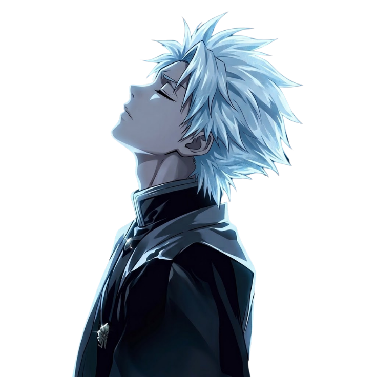
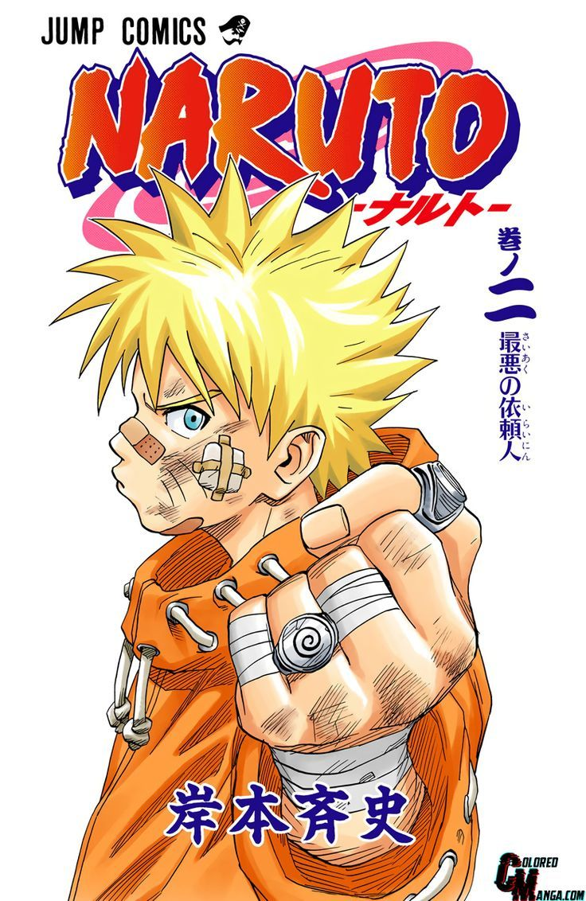
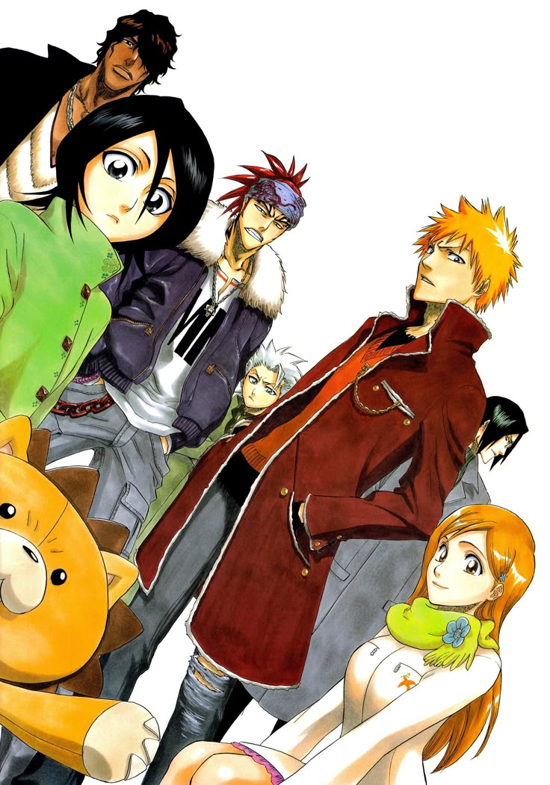
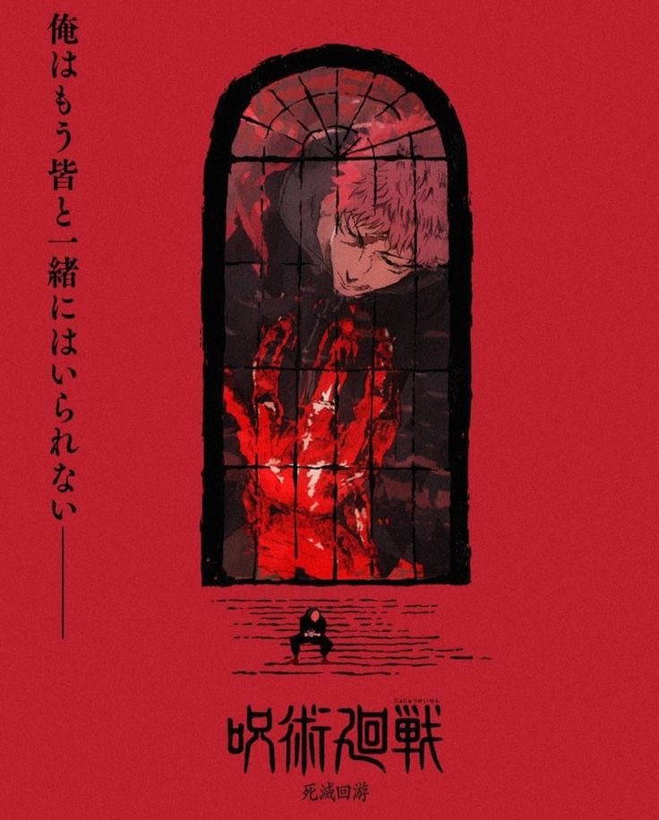
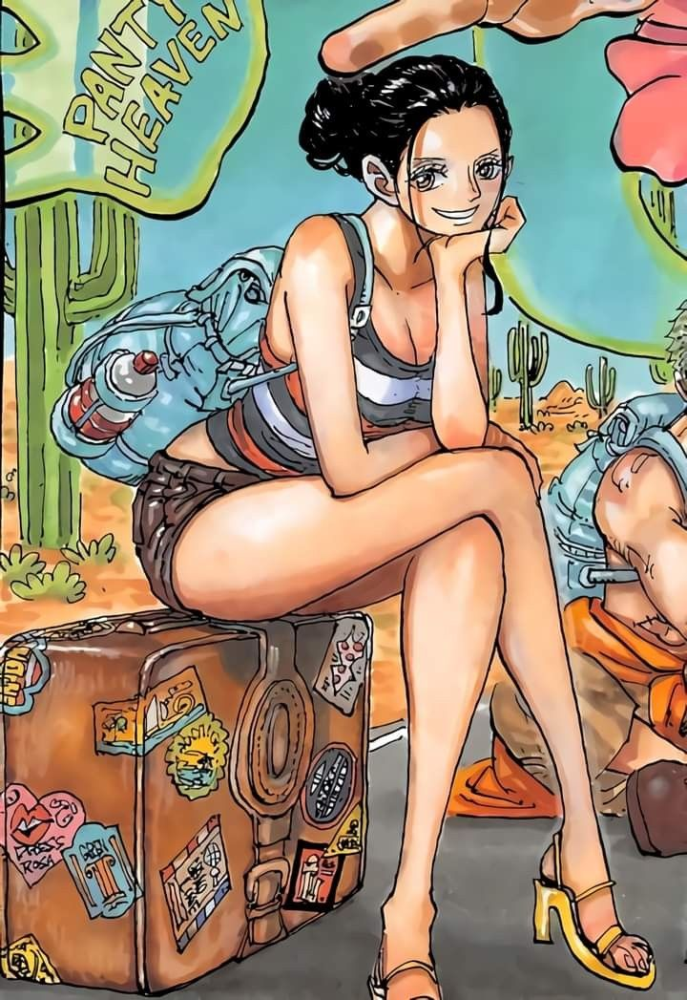

Onde cada história deixa a sua marca!
A YUME nasce para conectar pessoas que compartilham dessa paixão, criando um espaço para expressar opiniões, compartilhar experiências e descobrir o que cada história pode nos ensinar.

A YUME nasce para conectar pessoas que compartilham dessa paixão, criando um espaço para expressar opiniões, compartilhar experiências e descobrir o que cada história pode nos ensinar.

Por volta de 2015, conheci Naruto e fiquei fascinado por ele e por tudo o que representava. Foi a primeira vez que uma história me fez acreditar que, mesmo quando tudo parece impossível, ainda vale a pena tentar. E também foi o meu primeiro contado de fã com uma obra japonesa do qual comecei a acompanhar e comprar brindes.

Os animes despertaram meu interesse por estilos como Gorpcore, Grunge, Dark e Cyberpunk, incentivando-me a explorar a moda. Obras como Bleach, Akira e JoJo's Bizarre Adventure também me mostraram como a cultura dos animes influencia o universo fashion, seja por suas referências visuais ou por sua identidade marcante.


Os animes despertaram meu interesse por técnicas cinematográficas, como planos e enquadramentos. Obras como Chainsaw Man, a 3ª temporada de Jujutsu Kaisen e Akira me fizeram perceber como a animação pode explorar a linguagem visual e influenciar até mesmo produções musicais e artísticas.
Os animes me ajudaram a compreender melhor quem sou, enxergando valores e características minhas em personagens como Deku, com quem me identifico, e Robin, cuja personalidade única me inspira. Essas conexões despertaram meu interesse pelo autoconhecimento e pela liberdade de ser eu mesmo.

YUME significa sonho. Um espaço onde minhas paixões e ideias ganham forma e podem ser compartilhadas.
Criar conexões entre pessoas que compartilham o interesse por animes, mangás e suas histórias.
Compartilhar sentimentos, vivências e experiências, mostrando que uma obra pode significar algo diferente para cada pessoa.